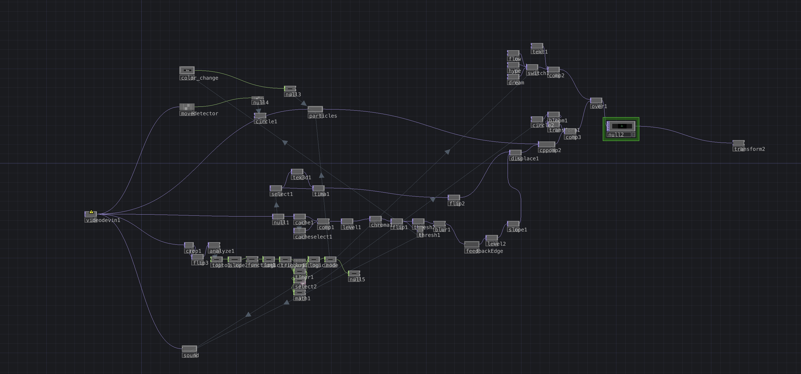
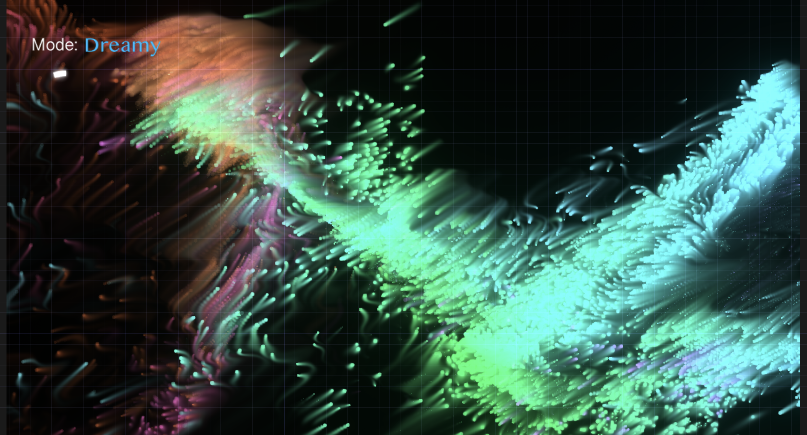
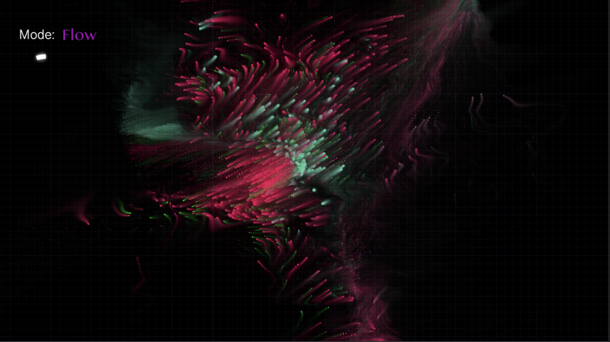

Your Body As The Instrument and Paintbrush:
An Embodied HCI Creative Project
Project description
This project investigates how embodied interaction can transform the human body into the primary interface for interraction, becoming both a musical instrument and a visual medium. Grounded in theories of embodied metaphors and movement analysis, the system enables users to generate and manipulate audiovisual output through physical movement. This project takes foundation in Paul Dourish’s conception of embodied interaction as meaning-making through situated action, alongside Laban Movement Analysis to understand movement quality. Implemented in TouchDesigner, the system creates a real-time feedback loop between motion, sound, and visuals, encouraging users to experience interaction as a continuous, felt process.
Introduction
Embodied interaction describes how people interact with computational systems through bodily actions situated in the physical world. According to Paul Dourish, embodied interaction is the creation, manipulation, and sharing of meaning through engaged interaction with artifacts1. Instead of abstract interfaces such as keyboards or menus, interaction emerges through physical movement and spatial engagement. In interactive art systems, this approach allows users to influence audiovisual outcomes through gestures and bodily motion, turning the body itself into an interface. In this project, body movement controls both visual particles and musical parameters, creating an embodied feedback loop between movement, sound, and visual form. The central research question guiding this project is: How can real-time mapping of bodily motion to audiovisual output support heightened bodily awareness and creative expression? By considering different qualities of movement alongside spatial dimensions, and drawing on established theories of embodied interaction, this project aims to create a multi-dimensional experience that prompts users to experiment with diverse modes of moving. The significance of the design is its aim of making the body itself the interface, achieved through a straightforward, intuitive system that responds directly to users’ movements, eliminating the need for instructions or external guidance and generating immediate, lived interaction. Meaning emerges through movement-based interaction, not buttons or menus. The body thus functions as the primary interface, replacing conventional input devices. Movement in physical space directly influences the outputs, allowing the user to interact with the system through gesture and spatial motion. By combining visual particle behavior with real-time audio processing, the system encourages users to become more aware of their bodies and movements within space. Through these mappings, the user’s body acts not only as an input device but also as a creative instrument. Movements can simultaneously shape the visual artwork and modulate the music, turning bodily motion into a musical performance and a digital painting.
Problem Statement
When developing interactive systems in symbiosis with the body, many parameters have to be considered. Not only is it vital to have an understanding of the affordances of a body in interaction with digital systems, but also the cognitive foundations of visual, spatial, and auditorial mappings. Different visual and artistic choices will--not always dependent on the developers intention--prompt different movement and induce particular ways of moving. This is where metaphorical mappings become the bridge between the digital system and the users embodied cognition. Despite advances in interactive systems, many digital interfaces still rely on symbolic inputs that separate the relationship between bodily action and expressive outcome. This creates a gap between what the body does and what the system produces, limiting the depth of engagement, especially in creative contexts. The central challenge, therefore, is how to successfully align design choices with the intended affect on the user (which in this scope is making the user aware of their body and movement, as well as prompt exploration of different movement qualities). The problem is to design an interaction paradigm where movement qualities (not just positions) shape outcomes, users experience interaction from a first-person, felt perspective, and sound and visuals respond in ways that reinforce embodied understanding.
Theoretical Foundations & Related Work
Drawing on Paul Dourish, this project addresses the absence of “meaningful engagement” in many interfaces1. At the same time, without frameworks like Laban Movement Analysis, systems risk ignoring the expressive richness of movement itself. The primary theoretical foundation comes from Paul Dourish, whose work establishes that interaction is fundamentally embodied, social, and situated. His argument rejects the notion of interaction as abstract input/output, instead positioning it as a process through which meaning is enacted in real time. This project directly takes on his stance: the system does not translate movement into commands; it allows meaning to emerge through continuous engagement. The second framework used for development is the Laban Movement Analysis (LMA). LMA is central to the conceptual and design approach. It breaks movement into key components of effort, space, body, and shape, allowing for a terminology to explain different types of movement within space. Ludwig Wittgenstein famously said that "The limits of my language means the limits of my world"2. Excluding LMA, we lose a language for describing otherwise abstract or not easily separatable concepts, and with that, perhaps the ability to perceive and differentiate movement at all. LMA in this project helped guide the design choices to include a wide range of movement, rather than mapping simple spatial dimensions.
Development & Design
The audiovisual system was implemented in TouchDesigner3 using a particle-based system consisting of approximately 58,000 particles.
Movement detection was implemented using optical flow analysis through a custom MoveDetector component. The detected motion vectors were connected to the “wind” parameter of the particle system, allowing user movement to influence particle direction and produce natural-looking flow dynamics.
Particle color is controlled by total movement by making the system register a difference between alpha levels in the current screen and a slightly delayed screen. This allows for creation of thresholds, where the lower range of total alpha difference means constricted, slow movement (Mapping most closely to the Laban parameters of Indirect, Light, Sustained, Bound); and a high alpha difference results from large, rapid movement (Free, Sudden, Strong, Direct), directly reflected in the visuals on the screen.




Together, these mappings carefully and intentionally allow people to use their bodies not just as a UI element, but also an instrument and a paintbrush.Discussion
The system operates without the need for introduction or explicit instructions, as meaning emerges dynamically through users’ bodily interactions. This design approach demonstrates a practical alignment with Dourish’s theories of meaning-making and the conceptualization of the body as an interface, as well as highlights the system’s capacity to facilitate immediate, first-person engagement. By encouraging spontaneous exploration and prompting users to discover how movement shapes audiovisual feedback, the project exemplifies how embodied interaction can bridge the gap between physical action and digital outcomes through carefully considered embodied metaphors in design choices. This process validates the theoretical foundations while showing the usefulness of intuitive, body-centered systems in supporting creative expression and heightened bodily awareness. Future development would include correcting the movement encoding to not be dependent on the size of your body on the screen. The alpha difference creates a functional threshold of the user's distance to the screen. Whereas it is not a methodological restriction, as many similar body interactive designs are also dependent on the distance positioning, it could be interesting to explore a version where the particles and music react similarly independent of your distance to the screen. Furthermore, the couling of particle behavior and sound changes might prove to be too entangled, as users might want to change on, but not the other. This could be achieved by for instance including a command, such as clenched fists, for changing one or the other separately. All in all, this project has shown the intricate coupling of cognition, embodiment, and digital system design; demonstrating that Human-Computer Interaction is an effort of delicately combining psychology, neuroscience, UI, and symbolic, artisitc language and metaphors to achieve a bridge between the inner and outer world.
References
- Dourish, P. (1999). Embodied Interaction: Exploring the Foundations of a New Approach to HCI.
- Wittgenstein, L. (1922). Tractatus Logico-Philosophicus.
- Derivative. (2026). TouchDesigner (Version 2025) [Computer software]. https://derivative.ca/